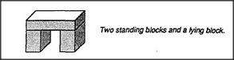
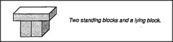
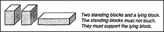
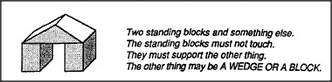

Our child, playing with some blocks and a toy car, happens to build this structure. Let's call it a Block-Arch.
Block-Arch seems to cause a strange new phenomenon: when you push the car through it, your arm gets trapped! Then, in order to complete that action, you must release the car — and reach around to the other side of the arch, perhaps by changing hands. The child becomes interested in this Hand-Change phenomenon and wonders how Block-Arch causes it. Soon the child finds another structure that seems similar — except that Hand-Change disappears because you can't even push the car through it. Yet both structures fit the same description!
But if Block-Arch causes Hand-Change, then this can't be a block-arch. So the child must find some way to change the mental description of Block-Arch so it won't apply to this. What is the difference between them? Perhaps this is because those standing blocks now touch one another, when they didn't touch before. We could adapt to this by changing our description of Block-Arch: There must be two standing blocks and a lying block. The standing blocks must not touch. But even this does not suffice, because the child soon finds yet another structure that matches this description. Here, too, the Hand-Change phenomenon has disappeared; now you can push the car through it without letting go!
Again we must change our description to keep this from being considered a Block-Arch. Finally the child discovers another variation that does produce Hand-Change:
Our child has constructed for itself a useful conception of an arch, based entirely upon its own experience.